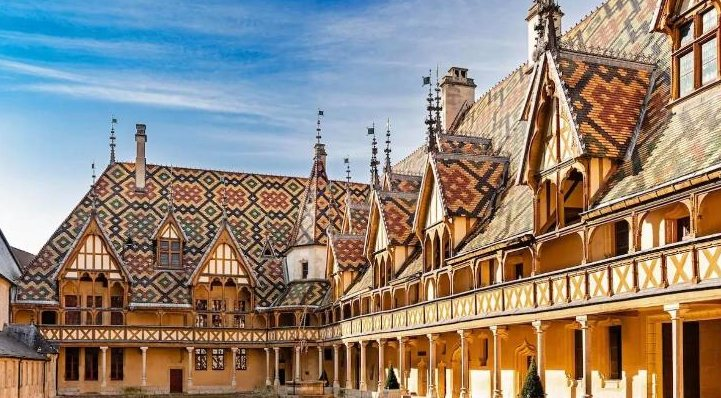
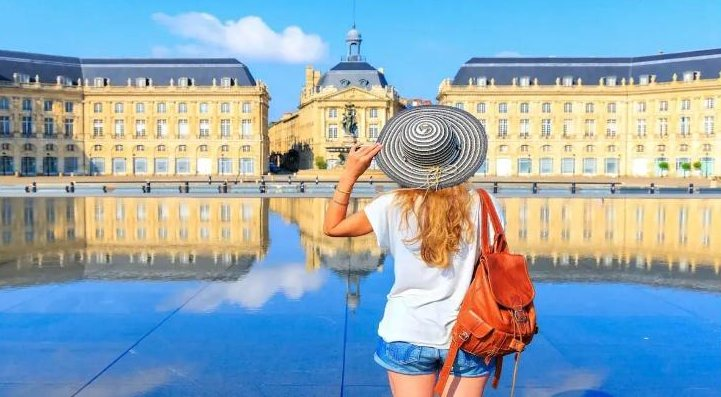
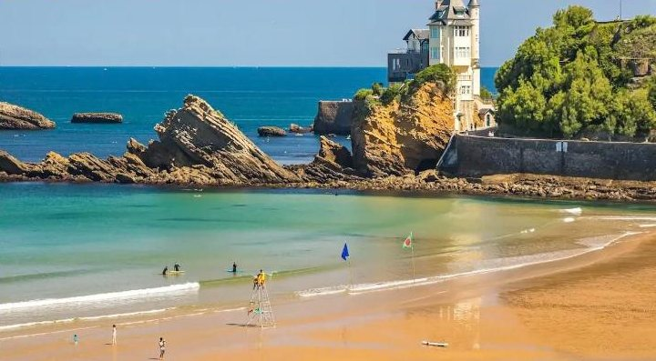
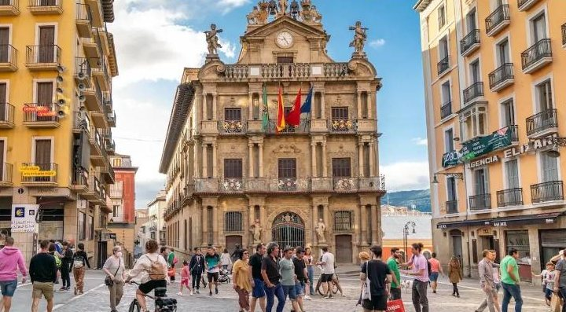
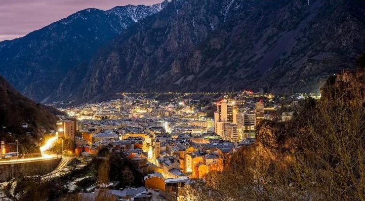

dzień1
Wyjazd z Polski
📍 Katowice → Francja
Wyjazd zgodnie z rozkładem, postoje na dużych stacjach. Obiadokolacja i nocleg już we Francji.

Francja, Hiszpania i Andora — wino, ocean i średniowieczne miasta
Kolejność zwiedzania może się nieco zmienić — o szczegółach decyduje pilot na miejscu.
📍 Katowice → Francja
Wyjazd zgodnie z rozkładem, postoje na dużych stacjach. Obiadokolacja i nocleg już we Francji.

📍 Dijon · Beaune
Dijon, stolica Burgundii: Pałac Książąt Burgundii, katedra i słynna musztarda. Po południu Beaune — piękne średniowieczne miasteczko z dawnym szpitalem o kolorowym dachu i piwnicami pełnymi wina. Dla chętnych degustacja.
📍 Lyon · Clermont-Ferrand
Lyon: stare miasto z ukrytymi przejściami przez kamienice, bazylika na wzgórzu, wielki plac Bellecour i katedra z zegarem astronomicznym. Potem przejazd przez Owernię, krainę wygasłych wulkanów, i krótki spacer w Clermont-Ferrand przy czarnej katedrze z wulkanicznego kamienia.
🚌 późny przyjazd do hotelu

📍 Bordeaux
Plac Quinconces z pomnikiem, katedra i nowoczesne muzeum wina Cité du Vin. Czas wolny.

📍 Biarritz
Eleganckie nadmorskie miasto z piękną plażą nad oceanem. Czas wolny na spacer, zakupy albo plażę.

📍 Kraj Basków (Hiszpania)
San Sebastián, „perła północy”: starówka z dawnym placem walk byków, dwa piękne kościoły i słynna promenada. Do spróbowania baskijskie przekąski pintxos i lekkie białe wino txakoli. Po południu Pampeluna — miasto lipcowej gonitwy byków.

📍 Saragossa · Andora
Saragossa: stare miasto z rzymskimi ruinami i zabytkami arabskimi, miasto malarza Goi. Potem przez Pireneje do maleńkiej Andory — spacer i zakupy w sklepach bez cła.

📍 Carcassonne · Annecy (Francja)
Carcassonne — największa i najlepiej zachowana średniowieczna twierdza w Europie, z murami i bazyliką (UNESCO). Potem krótki spacer po Annecy, nazywanym „Wenecją Alp”.
📍 Rothenburg ob der Tauber (Niemcy)
Jedno z najpiękniejszych miasteczek Niemiec — średniowieczne uliczki i kolorowe domy. Czas wolny.
📍 Niemcy → Katowice
Po śniadaniu wyjazd do Polski. Do Katowic autokar dociera ok. północy.
Wyjazd autokarem z Katowic w piątek, powrót w niedzielę w nocy. Cena jest za jedną osobę, gdy w pokoju są 2 osoby (urlop.pl podaje cenę za dwie: 9 248 zł).
| Cena wycieczki (najtańszy termin) | 4 624 zł |
| Obowiązkowe ubezpieczenie (leczenie i wypadki) | 150 zł |
| Fundusze gwarancyjne (TFG i TFP) | 20 zł |
| Obowiązkowo w autokarze: bilety, przewodnik, słuchawki, parkingi | 300 € ≈ 1 275 zł |
| Obowiązkowe obiadokolacje (9 razy) | 180 € ≈ 765 zł |
Euro przeliczone orientacyjnie po ok. 4,25 zł. Bez degustacji wina, napojów i zakupów. Dla 2 osób: ok. 13 700 zł.
Wycieczkę organizuje biuro Funclub. Ceny sprawdziłem w porównywarce urlop.pl, która ją sprzedaje — infolinia urlop.pl:
22 451 00 00
📞 Zadzwoń Zobacz ofertę na urlop.pl ↗